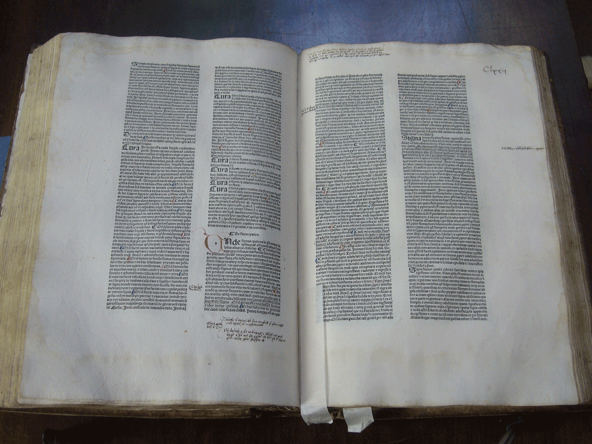
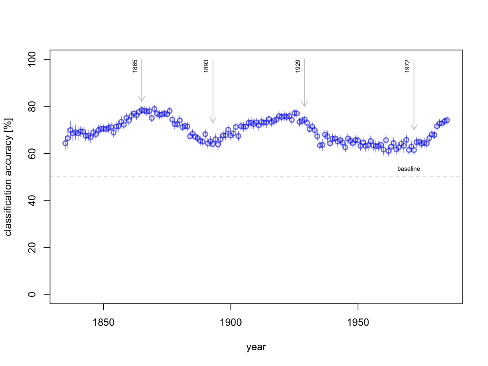
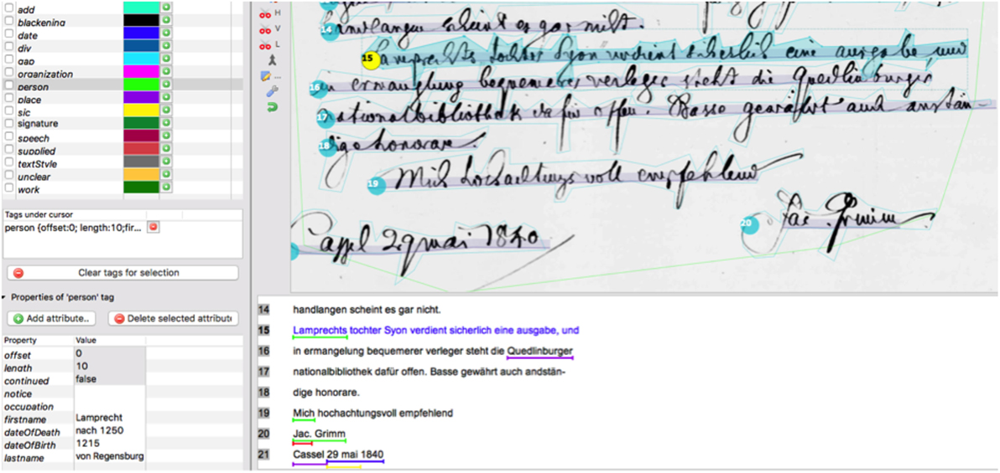
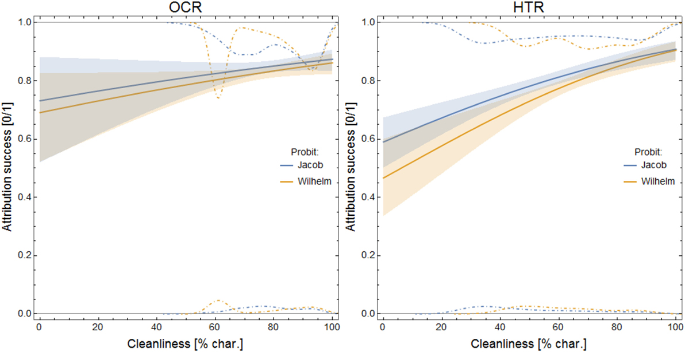
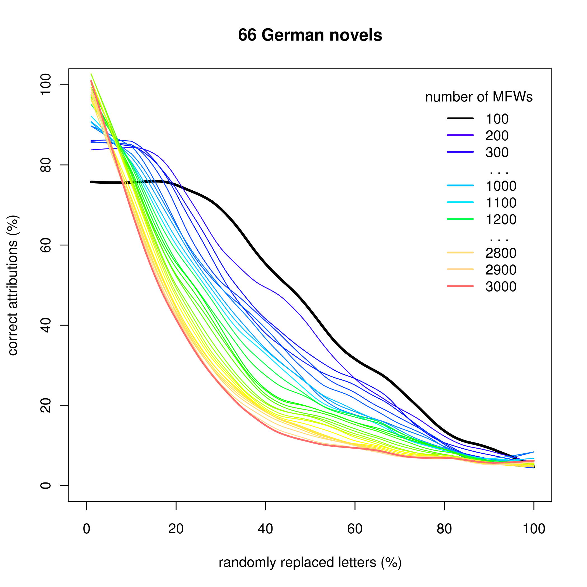

Słowa odpowiedzialne za zmianę

Magdalena Król, Joanna Byszuk, Maciej Eder

Magdalena Król Joanna Byszuk Maciej Eder
Instytut Języka Polskiego PAN
Dariah Theme 2017 ‘Public Cultural Heritage’, 19 kwietnia 2018


\[p(t) = \frac{1}{1 + a \times e^{-rt}}\]

<tok>
<orth>Ośmnastego</orth>
<lex><base>ośmnasty</base><ctag>adj:sg:gen:m1:pos</ctag></lex>
<lex><base>ośmnasty</base><ctag>adj:sg:gen:m2:pos</ctag></lex>
<lex disamb="1"><base>ośmnasty</base><ctag>adj:sg:gen:m3:pos</ctag></lex>
<lex><base>ośmnasty</base><ctag>adj:sg:gen:n:pos</ctag></lex>
<lex><base>ośmnasty</base><ctag>adj:sg:acc:m1:pos</ctag></lex>
<lex><base>ośmnasty</base><ctag>adj:sg:acc:m2:pos</ctag></lex>
</tok>
<tok>
<orth>lutego</orth>
<lex disamb="1"><base>luty</base><ctag>subst:sg:gen:m3</ctag></lex>
</tok>
<tok>
<orth>roku</orth>
<lex disamb="1"><base>rok</base><ctag>subst:sg:gen:m3</ctag></lex>
<lex><base>rok</base><ctag>subst:sg:loc:m3</ctag></lex>
<lex><base>rok</base><ctag>subst:sg:voc:m3</ctag></lex>
</tok>
<tok>
<orth>1814</orth>
<lex disamb="1"><base>1814</base><ctag>tnum:integer</ctag></lex>
</tok>
<tok>
<orth>,</orth>
<lex disamb="1"><base>,</base><ctag>interp</ctag></lex>
</tok>
<tok>
<orth>jechał</orth>
<lex disamb="1"><base>jechać</base><ctag>praet:sg:m1:imperf</ctag></lex>
<lex><base>jechać</base><ctag>praet:sg:m2:imperf</ctag></lex>
<lex><base>jechać</base><ctag>praet:sg:m3:imperf</ctag></lex>
</tok>
<tok>
<orth>na</orth>
<lex disamb="1"><base>na</base><ctag>prep:loc</ctag></lex>
<lex><base>na</base><ctag>prep:acc</ctag></lex>
</tok>
<tok>
<orth>białym</orth>
<lex><base>biały</base><ctag>adj:sg:inst:m1:pos</ctag></lex>
<lex><base>biały</base><ctag>adj:sg:inst:m2:pos</ctag></lex>
<lex><base>biały</base><ctag>adj:sg:inst:m3:pos</ctag></lex>
<lex><base>biały</base><ctag>adj:sg:inst:n:pos</ctag></lex>
<lex><base>biały</base><ctag>adj:sg:loc:m1:pos</ctag></lex>
<lex disamb="1"><base>biały</base><ctag>adj:sg:loc:m2:pos</ctag></lex>
<lex><base>biały</base><ctag>adj:sg:loc:m3:pos</ctag></lex>
<lex><base>biały</base><ctag>adj:sg:loc:n:pos</ctag></lex>
<lex><base>biały</base><ctag>adj:pl:dat:m1:pos</ctag></lex>
<lex><base>biały</base><ctag>adj:pl:dat:m2:pos</ctag></lex>
<lex><base>biały</base><ctag>adj:pl:dat:m3:pos</ctag></lex>
<lex><base>biały</base><ctag>adj:pl:dat:f:pos</ctag></lex>
<lex><base>biały</base><ctag>adj:pl:dat:n:pos</ctag></lex>
</tok>
<tok>
<orth>koniu</orth>
<lex disamb="1"><base>koń</base><ctag>subst:sg:loc:m2</ctag></lex>
<lex><base>koń</base><ctag>subst:sg:voc:m2</ctag></lex>
</tok>


a = c(6.5, 82.5, 38.4, 13.6, 7, 5.35, 11.7, 6.8, 4.5, 43) plot(sort(a), ylim=c(0,100), type=“h”, lwd=10)
30001002731133Z a c h ę c o n y dobrem przyięciem G ram m aty k i llo ssy y sk iey , k tó rey drugie w y danie w ro k u 181 i nastąpiło; dla przysługi W spótzioinkóm , spieszę się z ofiarow aniem Polskiey, w tym zamiarze ,
ażeby ona do popraw y błędnego dziś
i ( śmiało rzec m ożna) nadto przesadzon ego, a ze zwyczaiem praw dziw ie Polskim niezgodnego pisania i m ów ienia
sp o so b u , w czem kolw iek dopomódz
m ogła.
Nie miesce tu w y ty k a ć , iakie się
W pisaniu i ustney m owie zagęściły błęd y : przez iednych um yślnie (że tak pow iem ) śpiknionych na znisczenie piękności ięzy k a, i dla zaprowadzenia, podpozorem now om odnych a dziw acznych
w y razów , zawiłości rzeczy: przez d ru gich, z niewiadoiności p raw ideł popełniane: ale ktoby życzył u niknąć zdrożnośei; w tern sozupłem dziełku znaydzie niektóre podane sobie rady.
Może mi kto mieć za złe i zarzucić, żem te praw id ła s cudzey w y p isał p race: nie przeczę ia te m u : bom się
sczerze chciał w e wszystkiem stosować
ta k do woli niegdyś za królestw a Pol1
. ■ ■ .
skiego byłey Kommissyi cdukacyyney,
k tó ra w ro k u 1778 G ram inatykę przez
JX . Onufrego Kopczyńskiego, w yznaczonego od niey do iey ułożenia, napisan ą, po roztrząśnieniu przez T ow arzystw o do xiąg elem entarnych, za dobrą
uznaw szy, Szkołom narodow ym do użycia podała: iako też, że I m p e r a t o r s k i
U niw ersytet W ile ń s k i, w całym sw ym
wydziale dotąd Szkołom w szystkim
onę uczyć zaleca. Lecz co pierw szy P isarz iey , na trzy dzieląc klassy , w e
trzech osobnych w ydał x iążcczkacb,v